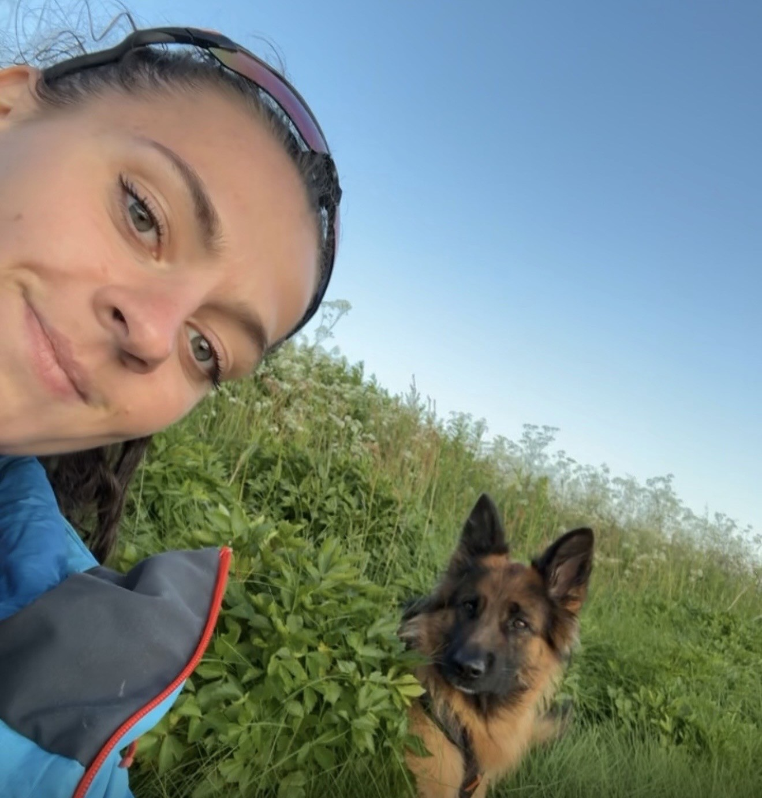
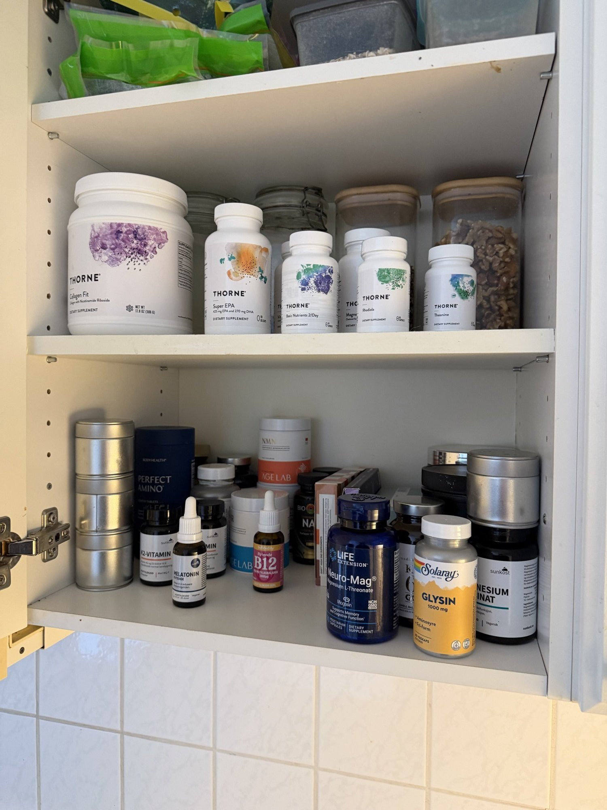
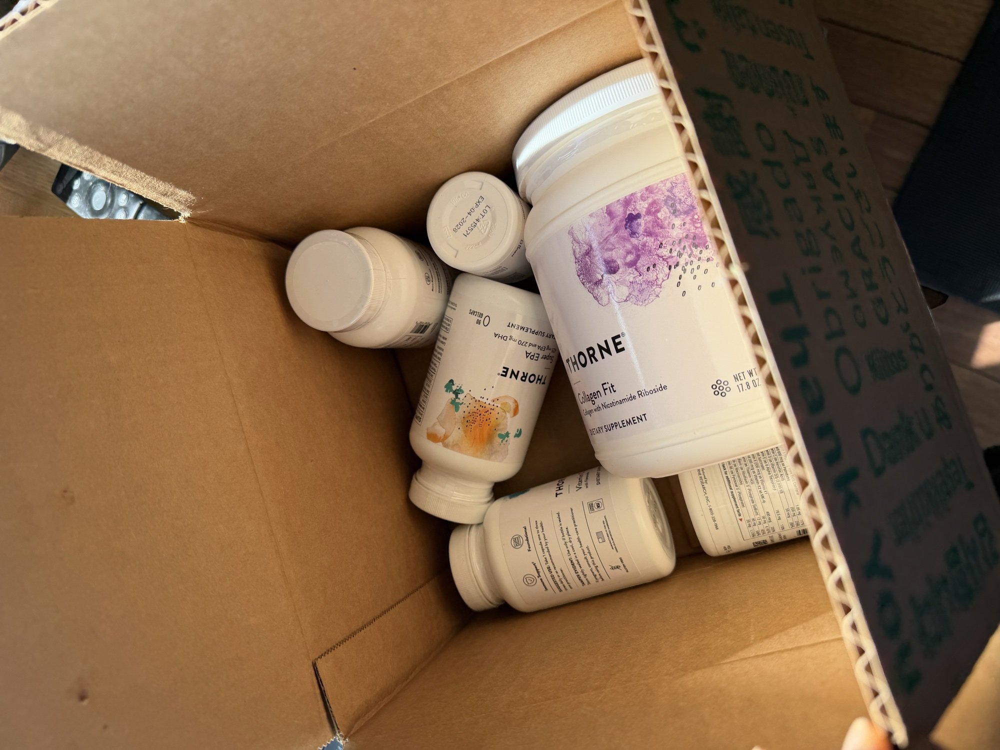
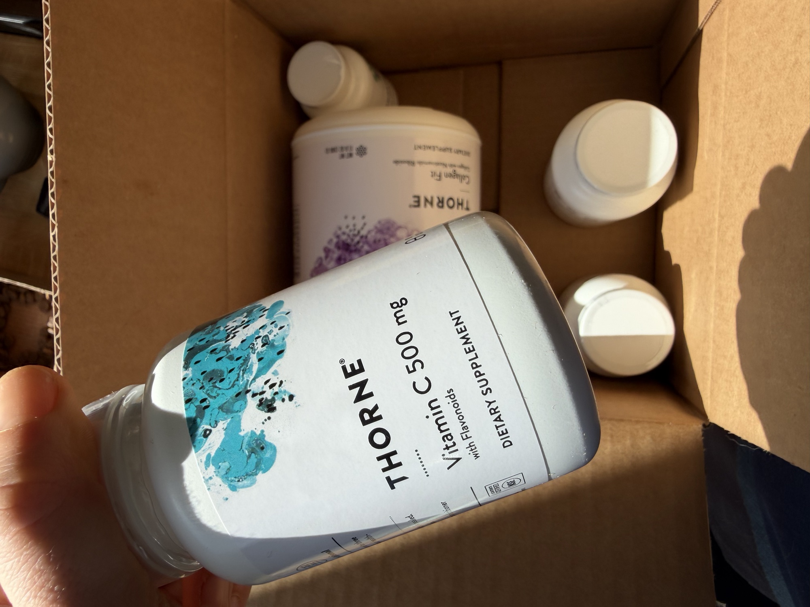
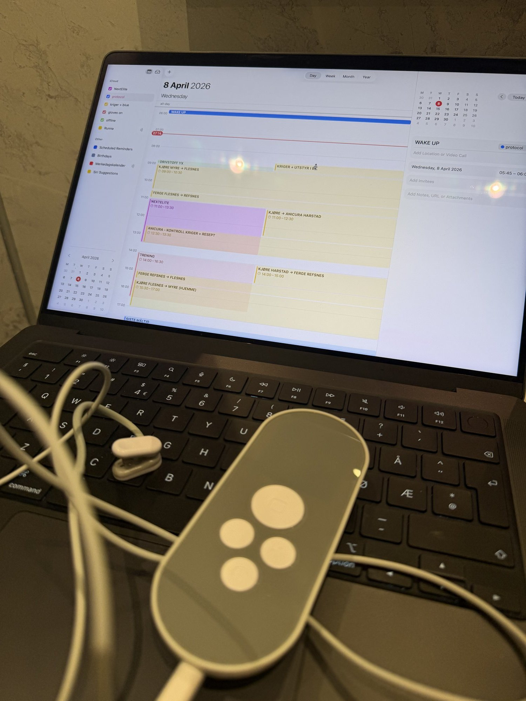
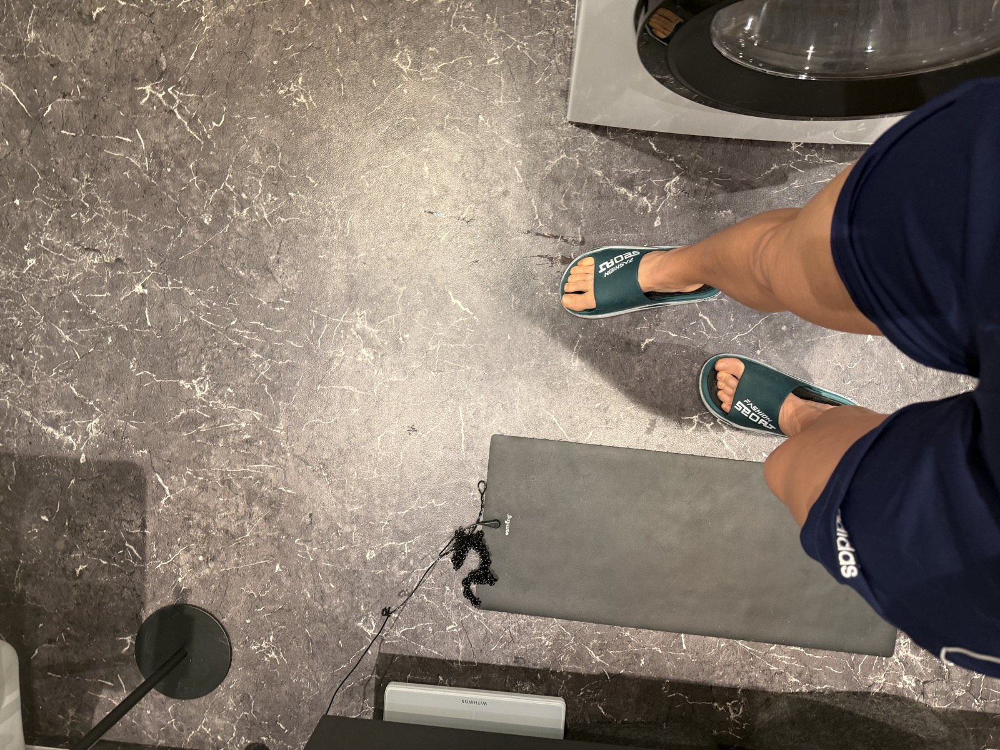
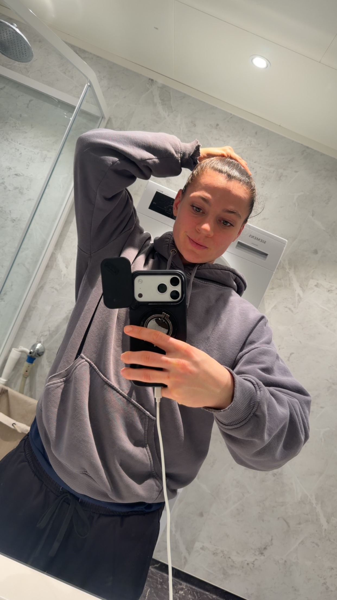
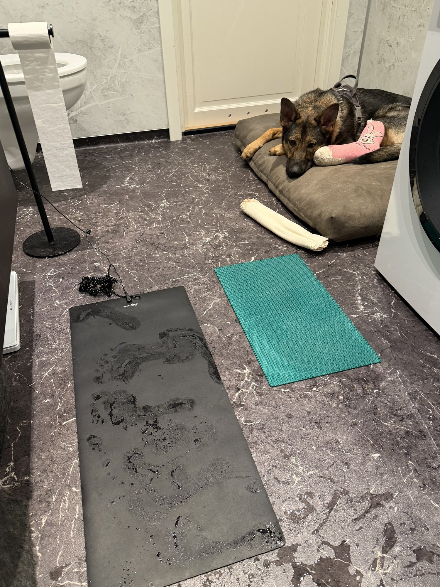
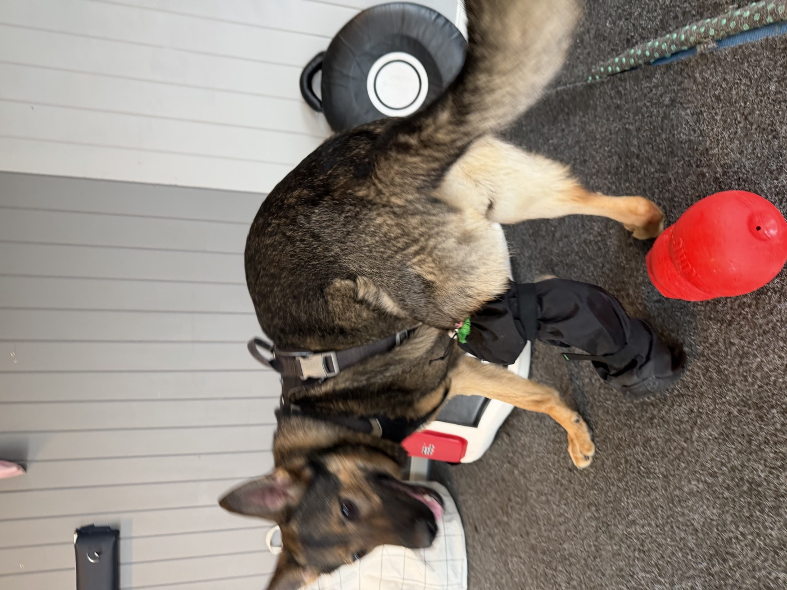

// code your next level
Forrige uke sa jeg at brettet funka og at stacken ikke var ferdig. Begge deler stemmer fortsatt. To ting har endra seg. Den første pakken kom. Nå kom den store.Last week I said the tray worked and the stack wasn't finished. Both still true. Two things have changed. The first order arrived. Now the big one arrived.
research er arbeid. kroppen er prosjektet.research is work. the body is the project.
brettet.the tray.
Tirsdag og onsdag denne uka la jeg to nye bokser ned på brettet. L-Theanin fra Thorne. Neuro-Mag fra Life Extension. Det er ikke mye. To bokser og en kvittering fra iHerb. Men det er det første som faktisk kom fram. I dag kom resten.Tuesday and Wednesday this week I put two new bottles on the tray. L-Theanine from Thorne. Neuro-Mag from Life Extension. It isn't much. Two bottles and a receipt from iHerb. But it's the first thing that actually arrived. The rest arrived today.
Det er fortsatt den samme morgenen. Alarmen, brettet, badet, supplementene. Ingen nye beslutninger. Det er hele poenget. Når noe nytt kommer inn i stacken, går det rett på brettet og blir en del av den samme handlingen du allerede gjør. Det blir ikke et nytt prosjekt. Det blir en boks til.The morning is still the same. Alarm, tray, bathroom, supplements. No new decisions. That's the whole point. When something new enters the stack, it goes straight on the tray. It becomes part of a motion you already make. It doesn't become a new project. It becomes one more tub.

Theanin er 200 milligram om morgenen og 200 milligram om kvelden. Neuro-Mag er to kapsler om morgenen og én om kvelden. Det er forskjellen fra forrige uke. Alt annet er det samme. Foreløpig.Theanine: 200mg in the morning, 200mg at night. Neuro-Mag: two caps morning, one evening. That's the difference from last week. Everything else is the same. For now.
De to flaskene i boksen: Thorne Theanine og Neuro-Mag (annonselenke). Samme deal.The two bottles in that box: Thorne Theanine and Neuro-Mag (annonselenke). Same deal.
pakken kom.the package arrived.
Klokka tolv i dag sto det en pappeske på gulvet. Jeg åpnet den. Åtte bokser Thorne og én stor boks Collagen Fit. 1800 kroner med kapsler som har vært underveis i fem måneder i hodet mitt og noen dager på en bil.Noon today there was a cardboard box on the floor. I opened it. Eight Thorne tubs and one big tub of Collagen Fit. 1800 kroner of capsules that had been in transit for five months in my head and a few days on a van.
Basic Nutrients 2/Day. Super EPA. Magnesium Glycinate. Rhodiola. Vitamin C 500mg med flavonoider. Og Collagen Fit i den store lilla boksen som veier mer enn alt det andre til sammen.Basic Nutrients 2/Day. Super EPA. Magnesium Glycinate. Rhodiola. Vitamin C 500mg with flavonoids. And Collagen Fit in the big purple tub that weighs more than everything else combined.

Jeg plukka opp Vitamin C-boksen først. Ikke fordi den er viktigst. Fordi fargen på etiketten er blå og de andre er mer dempa og jeg ville se om noe av det faktisk stemte overens med bildet i hodet mitt. Det gjorde det. Det er bare en boks. En helt vanlig boks med kapsler. Ingenting magisk. Bare noe som faktisk er her nå.I picked up the Vitamin C first. Not because it's the most important. Because the label is blue and the others are more muted and I wanted to see if any of it actually matched the picture in my head. It did. It's a bottle. A regular bottle with capsules in it. Nothing magic. Just something that's actually here now.

Jeg hadde tenkt at det skulle føles som noe. Et lite punkt. En liten seier. Det føltes ikke som det. Det føltes som å komme hjem med en handlepose. Du har ikke løst noe. Du har bare flytta det fra bestillingsbekreftelsen til kjøkkenet. Jobben starter i morgen, på brettet, med ett mer glass og tre nye bokser på plass.I thought it would feel like something. A small point. A small win. It didn't. It felt like coming home with a grocery bag. You haven't solved anything. You've just moved it from an order confirmation to the kitchen. The work starts tomorrow, on the tray, with one more glass and three new tubs in place.
Det er kanskje det som er poenget. De store øyeblikkene er ikke store. De er bare små øyeblikk som ligner på de forrige.Maybe that's the point. The big moments aren't big. They're just small moments that look like the ones before them.
Hele bestillingen er seks Thorne-produkter. Basic Nutrients, Super EPA, Magnesium Glysinat, Vitamin C, Rhodiola, Collagen Fit. Akkurat det som sto i pappeska da jeg åpna den i dag. Hele handlekurven her (annonselenke). Rabattkoden NHR7699 er på. Du sparer ti prosent. Jeg får betalt for å ha lest Bryan Johnsons protokoll på en fredagskveld. Fair handel.The whole order is six Thorne products. Basic Nutrients, Super EPA, Magnesium Glycinate, Vitamin C, Rhodiola, Collagen Fit. Exactly what was in the box when I opened it today. The full cart is here (annonselenke). Code NHR7699 is already applied. You save ten percent. I get paid for reading Bryan Johnson's protocol on a Friday night. Fair deal.
fortsatt ingen data.still no data.
Blodprøvene er fortsatt ikke tatt. Det er det ærlige i dette. Jeg skrev det forrige uke og jeg skriver det igjen. Hele stacken er basert på lesing, ikke på biomarkører. Jeg vet ikke om D-vitaminet mitt er lavt. Jeg vet ikke hva ferritinet er. Jeg vet ikke om skjoldbruskkjertelen tåler ashwagandha. Derfor ligger ashwagandha på vent. Det blir der til noen stikker en nål i armen min og sender meg en pdf.The blood work still hasn't been done. That's the honest part. I wrote it last week. I'm writing it again. The whole stack is built on reading. Not on biomarkers. I don't know if my vitamin D is low. I don't know what my ferritin looks like. I don't know if my thyroid can handle ashwagandha. So ashwagandha stays on hold. It stays there until someone puts a needle in my arm and sends me a pdf.
Jeg har fastlegen min. Papirene er i gang. Det tar den tida det tar i Norge, og det er greit. Det er ikke en unnskyldning. Det er bare sånn det er.I have a doctor. The paperwork is moving. Things take the time they take in Norway. That's fine. Not an excuse. Just how it is.
Dette er ikke ferdig. Det blir kanskje aldri helt ferdig. Men det er ikke lenger ingenting heller.This isn't finished. Maybe it never will be. But it isn't nothing anymore.
hva som endra seg.what changed.
Sengetid er klokka ni nå. Den var halv ti. Tretti minutter høres ikke mye ut. WHOOP sier søvnkonsistensen min ligger rundt 78 prosent den siste uka. Jeg trodde den var lavere. Kroppen lyver ikke, men hjernen min gjør det av og til.Bedtime is nine now. It used to be half past. Thirty minutes doesn't sound like much. WHOOP says my sleep consistency sits around 78 percent for the week. I thought it was lower. The body doesn't lie. My head does sometimes.
WHOOP-en sier sakte det samme som speilet sier. Kroppen svarer på det jeg gjør. Ikke fort. Ikke dramatisk. Bare sakte. Snittpulsen min i hvile har lagt seg mellom 49 og 57. HRV-en svinger fra 99 til 157. Mandag traff jeg 96 prosent recovery. Onsdag lå jeg på 39, etter seks timer i bil til Harstad og tilbake. Å kjøre er en hardere treningsøkt enn boksing. Kroppen vet forskjell på stress og strain, selv om jeg ikke alltid gjør det. Jeg har ikke en gunstig oppvekstsone for dette. Jeg bor på 68 grader nord. Sola er sesongarbeider her. Halvparten av året betyr D-vitamin at du husker at du er et pattedyr.The WHOOP is saying slowly what the mirror says. The body is responding. Not fast. Not dramatic. Slow. My resting heart rate has settled between 49 and 57. HRV swings from 99 to 157. Monday I hit 96 percent recovery. Wednesday I was at 39, after six hours in a car to Harstad and back. Driving is a harder workout than boxing. The body knows the difference between stress and strain. I don't always. I don't live in a kind climate for this. I'm at 68 degrees north. The sun is a seasonal worker here. Half the year, vitamin D is how you remember you're a mammal.
taurin.taurine.
I dag la jeg taurin på brettet. Pulver. Ett gram. Det er ikke et stort valg. Det er en skje til i det varme vannet. Den tar et halvt sekund og kroppen merker det ikke før uke tre.Today I put taurine on the tray. Powder. One gram. Not a big decision. One more scoop in the warm water. It takes half a second. The body won't notice it until week three.
Det er sånn protokoller faktisk bygges. Ikke med en stor annonsering. Med en skje til i et glass du allerede drikker.This is how protocols actually get built. Not with a big announcement. With one more scoop in a glass you're already drinking.
verktøy.tools.
Supplementer er én ting. Verktøy er noe annet. Jeg har en Nurosym på skrivebordet. Den stimulerer vagusnerven gjennom øret og den står alltid til venstre for laptopen når jeg koder. Jeg bruker den fordi Bryan Johnson bruker den, og fordi en rolig vagusnerve er en rolig PTSD for meg.Supplements are one thing. Tools are something else. I have a Nurosym on my desk. It stimulates the vagus nerve through the ear and it always sits to the left of the laptop when I code. I use it because Bryan Johnson uses one, and because for me a calm vagus nerve is a calm PTSD.
Kalenderen på laptopen er også et verktøy. Det er den samme kalenderen jeg skrev om forrige uke. Brettet er det fysiske laget. Kalenderen er det digitale. Begge gjør samme jobb: ta valgene vekk fra meg før klokka ni.The calendar on the laptop is also a tool. It's the same calendar I wrote about last week. The tray is the physical layer. The calendar is the digital layer. Both do the same job: take the choices away from me before nine in the morning.

badet.the bathroom.
Badet er der jeg starter dagen. Jeg står på vekta først. Withings-vekta. Samme vekt hver morgen, samme tidspunkt, samme belysning. Tallet er ikke alltid det jeg vil ha, men det er ærlig.The bathroom is where the day starts. I step on the scale first. The Withings. Same scale every morning, same time, same light. The number isn't always what I want, but it's honest.
Ved siden av vekta ligger en groundingmatte og en nålematte. Begge er på badet. Groundingmatta er jordet. Nålematta er bare spiker. Jeg står på den ene. Jeg står på den andre når skuldrene trenger å gi opp. Ingen av dem er magiske. De er bare små innganger til at kroppen husker at den er et dyr.Next to the scale there is a grounding mat and an acupuncture mat. Both are in the bathroom. The grounding mat is earthed. The acupuncture mat is just spikes. I stand on one. I stand on the other when my shoulders need to give up. Neither is magic. They are just small entry points to reminding the body it is an animal.

Jeg øver på å gå med rett fotposisjon. Øvelsen kommer fra en video jeg så. Det er rart å lære å gå på nytt når du er tjueåtte. Men her er vi.I am learning to walk with the right foot position. The drill comes from a video I watched. It is a strange thing to relearn when you are twenty-eight. But here we are.
Og så er det tungen. Jeg øver på mewing også. Samme logikk: lær kroppen sin rette form på nytt, litt hver dag, og ikke tenk på det resten av tida.And then there is the tongue. I am practicing mewing too. Same logic: teach the body its correct shape again, a little every day, and do not think about it the rest of the time.
WHOOP-appen er det første jeg sjekker. Recovery-tallet fra natta. HRV-en. Hvor mye søvn jeg faktisk fikk. Den forteller meg hva dagen er før jeg rekker å gjette. Noen dager liker jeg tallet. Andre dager forstår jeg det.The WHOOP app is the first thing I check. Last night's recovery. HRV. How much sleep I actually got. It tells me what the day is before I have a chance to guess. Some days I like the number. Other days I understand it.

kriger.
Hun er fortsatt i recovery. Onsdag var vi på AniCura Harstad. Jeg kjørte Myre, ferje Flesnes-Refsnes, opp til klinikken, tilbake igjen. Seks timer fram og tilbake for kontrollen som tok gipsen av. Hun sov hele veien hjem.She's still in recovery. Wednesday we drove to AniCura Harstad. From Myre, the ferry Flesnes to Refsnes, up to the clinic, back home. Six hours round trip for the checkup that took the cast off. She slept the whole way home.
Blue bor hos foreldrene mine mens Kriger er i recovery. Det er bedre for henne. Det er også på brettet, bare at brettet heter kalender.Blue is staying at my parents' place while Kriger heals. It's better for her. It's on the tray too. The tray is just called a calendar now.
Kriger er fra Kennel Tigerdyret i Danmark. Hun er tysk schæfer, og hun og Blue er hjertet mitt i hundeform. Skaden var alvorlig nok til at vi nesten mistet henne. De opererte senene, og siden da har AniCura Harstad holdt oss i hånda gjennom hele rehabiliteringa.Kriger came from Kennel Tigerdyret in Denmark. German Shepherd. She and Blue are my whole heart in dog shape. The injury was bad enough that we almost lost her. They operated on the tendons, and since then AniCura Harstad has held our hand through the whole recovery.
Det har vært gipsskift etter gipsskift, hver under narkose, hver med en ny farge. Teamet har dekorert noen av dem også. Den vi fikk rundt påske hadde en kanin og "god påske" skrevet på siden. Små ting, men det er sånne ting du husker når du kjører seks timer tur-retur med en hund som sover bak i bilen.It has been cast change after cast change, each one under anesthesia, each one in a new color. The team has decorated some of them too. The one we got around Easter had a rabbit and "happy easter" written on the side. Small things, but those are the things you remember when you are driving six hours round trip with a dog sleeping in the back of the car.
I dag er vi seks uker ut i rehab. Gipsen er borte. Nå har hun en mindre avstivet bandasje istedenfor, og protokollen slipper akkurat nå litt mer bevegelse gjennom senene som ble operert. Det er et skritt. Et lite et, men det teller.Today we are six weeks into rehab. The cast is off. She has a lighter bandage now instead, and the protocol is letting a little more movement through the tendons that were operated on. It is a step. A small one, but it counts.
Recovery skjer ikke på én time hos veterinæren. Det skjer i ukene imellom.Recovery does not happen in one hour at the vet. It happens in the weeks between.


whoop.
Jeg bruker WHOOP hver dag. Jeg har gjort det i seks måneder. Det er det eneste verktøyet jeg stoler på fra start til slutt. Det sier meg ting jeg ikke vil vite og det sier meg ting jeg trengte å høre. Det registrerer feilene og seirene. Det lyver ikke.I wear a WHOOP every day. Have done for six months. It's the one tool I trust end to end. It tells me things I don't want to hear and things I needed to hear. It logs the misses and the wins. It doesn't lie.
Hvis du vurderer å begynne, så gjør det. Det er det jeg bruker. Gratis WHOOP og en måned gratis med min link (annonselenke). Du får en måned gratis. Jeg får kickback. Det betaler for alle timene jeg har brukt på å finne ut hva som faktisk funker. Ingen skam.Thinking about starting? Do it. A free month for you (annonselenke). A kickback for me. I need an excuse to stare at HRV numbers when I should be sleeping. Thanks in advance.
veien videre.the road ahead.
Neste uke er det samme som forrige uke. Bygg stacken. Snakk med legen. Bygg brettet. Bokse. Mate Kriger klokka ti. Sove klokka ni.Next week looks the same as last week. Build the stack. Talk to the doctor. Build the tray. Box. Feed Kriger at ten. Sleep at nine.
Det er ikke spennende. Det er det som er poenget.It isn't exciting. That's the point.
Forrige uke var alt nytt. Nå er alt fortsatt nytt, bare litt mindre nytt. Det er framgang. Det er ikke resultatet. Det er prosessen. Jeg sa det forrige uke og jeg kommer til å si det igjen til jeg har noe annet å si.Last week was all new. Now it's still new, just a little less new. That's progress. Not a result. A process. I said it last week. I'll keep saying it until I have something else to say.
om lenkene.about the links.
<333